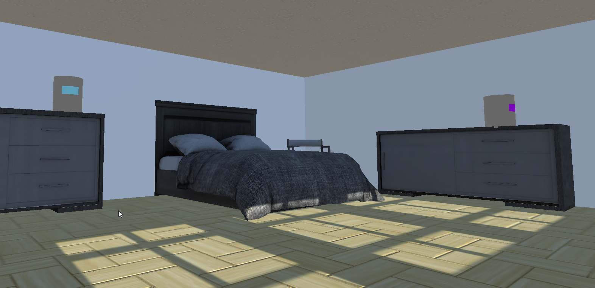
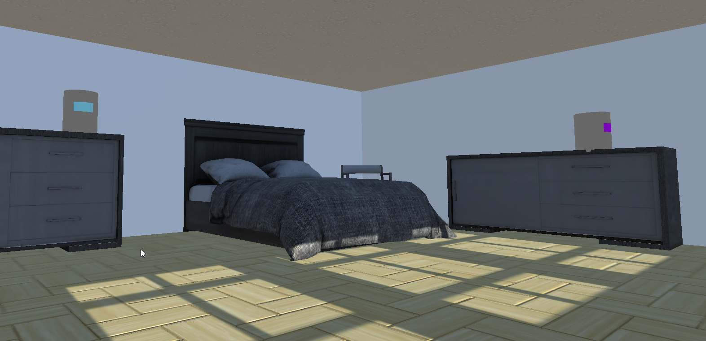

Caméra
Un des aspects explorés par le groupe était de s'éloigner de la
caméra 3e personne et de donner un sentiment diférent au joueurs,
nous avons donc décider d'intégrer une caméra qui suis donc le joueur de pièces en pièces.
Celle-ci peux s'avérer difficile à géré pour le joueur car elle rajoute un niveau de difficulté au déplacements
pour les dirrections avant et arrière. Une mauvaise perceptions e la profondeur peux rendre le jeux un peu plus difficile
à jouer pour les joueurs moins expérimenté avec ce style de caméra mais reste plus que divertissante pour le joueur.
Contrôles
Les contrôles utilisés pour le personnage sont plutôt standarts, les flèches du clavier
dirigé le personnage, shift pour sprinté, la barre d'espace pour sauté ainsi que la touche "C" pour s'accroupir.
Nous avons décidé de rajouté un spect de furtivité pour donner le choix au joueur entre la version agressive (tuer les cadrans) et la méthode
furtive qui est de passer sans faire de bruits pour que les réveils n'essaie pas de réveillé le perosnnage. Le joueur dois aussi poussé certains objets
pour complété des parcours et débloqué certaines actions pour la suite du jeu.
Puzzles
Nous cherchions une facon de faire sentir au joueurs une progression au travers du niveau
mettant en places des séquence de puzzles pour que celui-ci sois toujours dirigé vers la bonne action
que le joueur ne ce sente pas laissé à lui même. Nous pouvons même dire que les choix de certaines actions du joueur lui permette de découvrir le
jeu de plusieurs façons, furtive ou non, etc.
 
